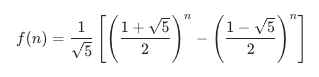

爬楼梯
题目
假设你正在爬楼梯。需要 n 阶你才能到达楼顶。
每次你可以爬 1 或 2 个台阶。你有多少种不同的方法可以爬到楼顶呢？
示例 1：
输入： n = 2
输出： 2
解释： 有两种方法可以爬到楼顶。
- 1 阶 + 1 阶
- 2 阶
示例 2：
输入： n = 3
输出： 3
解释： 有三种方法可以爬到楼顶。
- 1 阶 + 1 阶 + 1 阶
- 1 阶 + 2 阶
- 2 阶 + 1 阶
提示：
1 <= n <= 45
/**
* @param {number} n
* @return {number}
*/
var climbStairs = function(n) {
};参考答案
方法一：动态规划
思路和算法
我们用 f(x) 表示爬到第 x 级台阶的方案数，考虑最后一步可能跨了一级台阶，也可能跨了两级台阶，所以我们可以列出如下式子：
f(x)=f(x−1)+f(x−2)
它意味着爬到第 x 级台阶的方案数是爬到第 x−1 级台阶的方案数和爬到第 x−2 级台阶的方案数的和。
很好理解，因为每次只能爬 1 级或 2 级，所以 f(x) 只能从 f(x - 1) 和 f(x - 2) 转移过来，而这里要统计方案总数，我们就需要对这两项的贡献求和。
以上是动态规划的转移方程，下面我们来讨论边界条件。我们是从第 0 级开始爬的，所以从第 0 级爬到第 0 级我们可以看作只有一种方案，即 f(0) = 1；从第 0 级到第 1 级也只有一种方案，即爬一级，f(1) = 1。这两个作为边界条件就可以继续向后推导出第 n 级的正确结果。我们不妨写几项来验证一下，根据转移方程得到 f(2) = 2，f(3) = 3，f(4) = 5，……，我们把这些情况都枚举出来，发现计算的结果是正确的。
我们不难通过转移方程和边界条件给出一个时间复杂度和空间复杂度都是 O(n) 的实现，但是由于这里的 f(x) 只和 f(x - 1) 与 f(x - 2) 有关，所以我们可以用「滚动数组思想」把空间复杂度优化成 O(1)。下面的代码中给出的就是这种实现。
var climbStairs = function(n) {
let p = 0, q = 0, r = 1;
for (let i = 1; i <= n; ++i) {
p = q;
q = r;
r = p + q;
}
return r;
};复杂度分析
- 时间复杂度：循环执行 n 次，每次花费常数的时间代价，故渐进时间复杂度为 O(n)。
- 空间复杂度：这里只用了常数个变量作为辅助空间，故渐进空间复杂度为 O(1)。
方法二：通项公式
思路
之前的方法我们已经讨论了 f(n) 是齐次线性递推，根据递推方程 f(n) = f(n - 1) + f(n - 2)，我们可以写出这样的特征方程：<br>x^2=x+1
我们得到了这个递推数列的通项公式：

var climbStairs = function(n) {
const sqrt5 = Math.sqrt(5);
const fibn = Math.pow((1 + sqrt5) / 2, n + 1) - Math.pow((1 - sqrt5) / 2, n + 1);
return Math.round(fibn / sqrt5);
};复杂度分析
代码中使用的 pow 函数的时空复杂度与 CPU 支持的指令集相关，这里不深入分析。
总结
这里形成的数列正好是斐波那契数列，答案要求的 f(n) 即是斐波那契数列的第 n 项（下标从 0 开始）。我们来总结一下斐波那契数列第 n 项的求解方法：
- n 比较小的时候，可以直接使用过递归法求解，不做任何记忆化操作，时间复杂度是 O(2^n)，存在很多冗余计算。
- 一般情况下，我们使用「记忆化搜索」或者「迭代」的方法，实现这个转移方程，时间复杂度和空间复杂度都可以做到 O(n)。
- 为了优化空间复杂度，我们可以不用保存
f(x - 2)之前的项，我们只用三个变量来维护f(x)、f(x - 1)和f(x - 2)，你可以理解成是把「滚动数组思想」应用在了动态规划中，也可以理解成是一种递推，这样把空间复杂度优化到了 O(1)。 - 随着 n 的不断增大 O(n) 可能已经不能满足我们的需要了，我们可以用「矩阵快速幂」的方法把算法加速到 O(logn)。
- 我们也可以把 n 代入斐波那契数列的通项公式计算结果，但是如果我们用浮点数计算来实现，可能会产生精度误差。